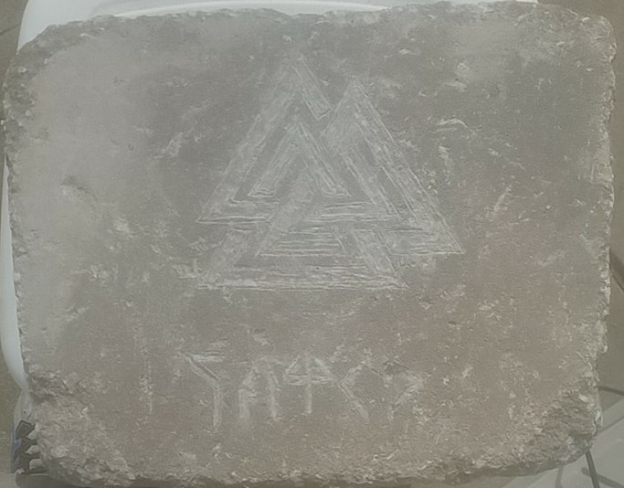

Card and Board Games
I am a huge fan of board and card games like The Settlers of Catan, A Game of Thrones and Legend of the Five Rings. I've been playing Magic: The Gathering since I was 10 years old, and played on the Professional Level from 2015 to 2017.

Live Action Roleplaying
One of my all time favorite hobbies is Live Action Roleplaying (LARP), where its somewhere between a tabletop game and a combat sport. I play Orcs and other maligned creatures in unique ways.

Mixed Martial Arts
Way back when, I competed in mixed martial arts competitions as an amateur, with a record of 5-2, and was active in IBJJF competitions in and around the Springfield, MO area.

Game Design
I've worked professionally on several games that are available for purchase, and others that I've kept locally or never released. Here's my favorite releases:
- Adaptive LARP Environmental System (ALES)
- Lambda
- Doomtown Reloaded: There Comes a Reckoning
- Go! Diego, Go! MegaBlocks Build and Rescue on Nintendo DS
- Patient Zero
- A LARP system built to adapt to several different settings, allowing for a single set of communial rules.
- Built on ALES, this Modern Urban Fantasy LARP will be launching in midsummer, and draws inspiration from Bright, Shadowrun and Jim Butcher's Dresden Files
- I helped playtest and conceptualize the 6th fastest gaming Kickstarter of all time with Pinebox Entertainment and AEG. Doomtown Reloaded is a trading card game about a small town in the Weird West that employs poker and cheating as its primary mechanics.
- Yes, I've seen every episode of Diego as part of the IP contract, but this game is ground up one of my designs, from the level flow to the strange LOST call outs throughout the game. I built this with the now defunct Black Lantern Studios in Springfield, MO as an intern.
- Built for the Geek Arts and Media Expo in Springfield, MO Patient Zero has players take the role of a scientist who infects himself with their version of the Zombie plague. Naturally, getting research funding means eating the brains of your former colleagues, and being the last patient zero standing against your three colleagues who have done the same thing.
Assorted Crafting
Beyond this, I do a lot of different crafts, and will try almost any kind of crafting project at least once. I'm really proud of this project, a grave stone for a friend of mine that passed recently. He actively participated in a LARP group with me, and I made this for his memorial.
